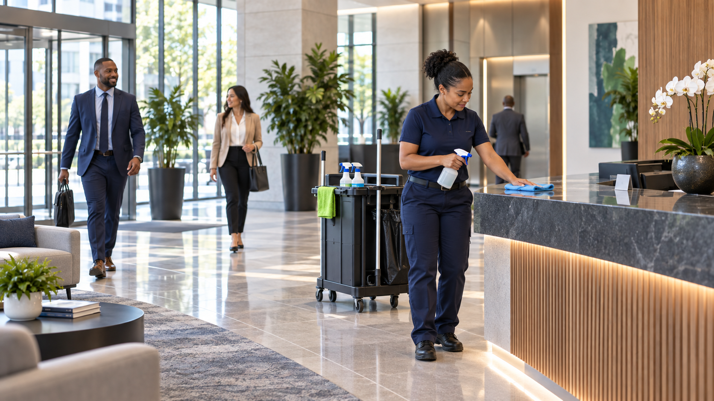
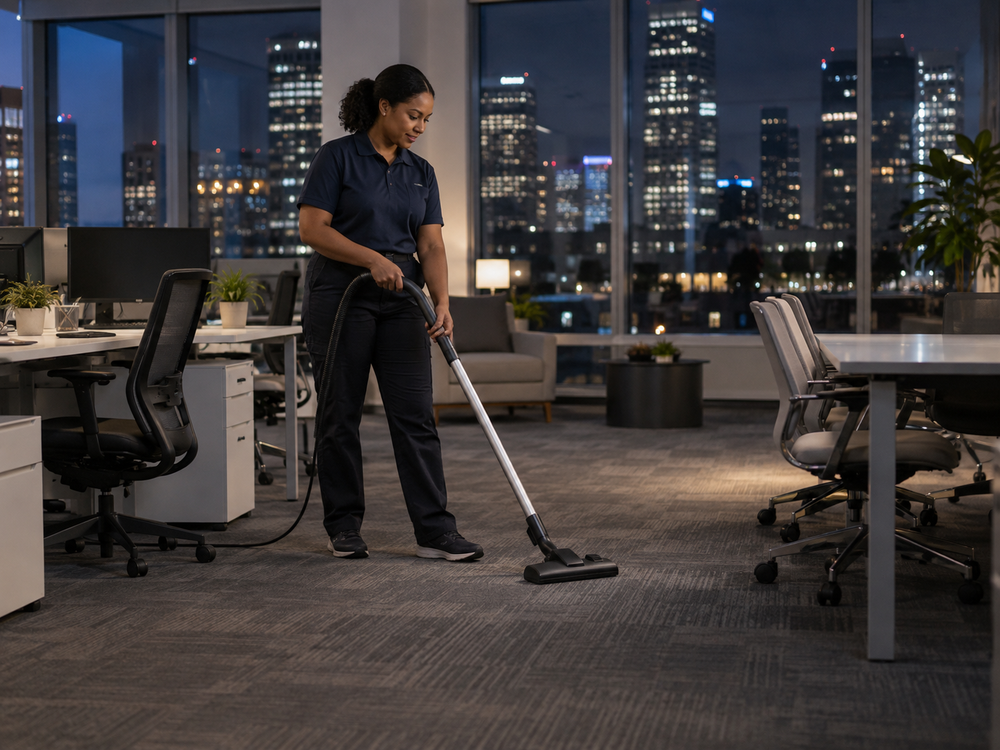

Day and Night Porter Coverage
Day and night porter service maintains lobbies, restrooms, shared areas, trash, spills, and supplies while a property is active. Paradigm Janitorial Services plans coverage around traffic and operating hours in Los Angeles County and San Bernardino County.


Areas Porter Service Maintains
Porter service can focus on the places that need repeat attention throughout the day or night.
Day and night porter service gives busy properties cleaning support during operating hours, after hours, or both. The service can be scheduled around the traffic patterns of your building instead of relying on one cleaning window.
How Porter Coverage Works
Coverage can be scheduled around busy periods, building traffic, restrooms, lobbies, trash, spills, and supply restocking.
Day Porter Service
A day porter can keep shared areas presentable while employees, tenants, customers, and visitors are using the property.
Night Porter Service
Night porter service supports properties that stay open late, open early, or need continued attention after regular daytime activity.
Built Around Your Traffic
Service can focus on the spaces that need attention most often, including entrances, lobbies, restrooms, kitchens, elevators, and common areas.
Flexible Scheduling
Porter coverage can be paired with recurring janitorial service so routine cleaning and ongoing maintenance work together.
Clean Spaces
Cleaning During Operating Hours
Explore schedules for busy properties, short access windows, and ongoing daytime care.